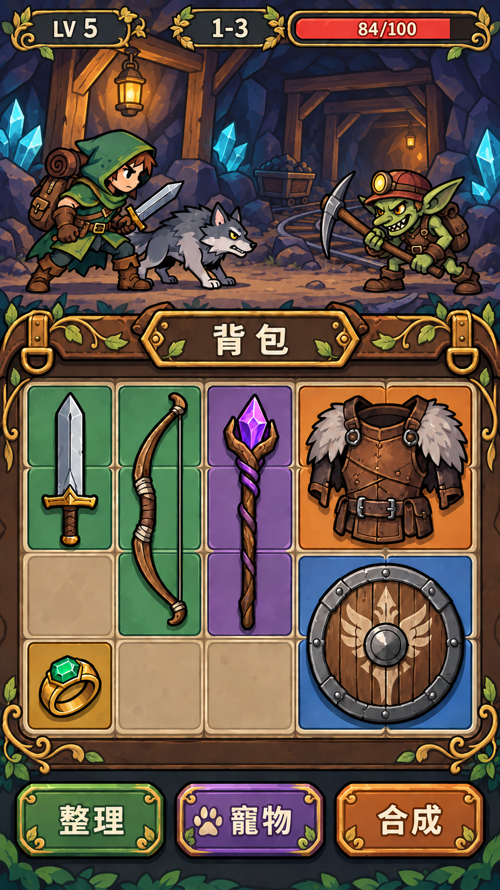
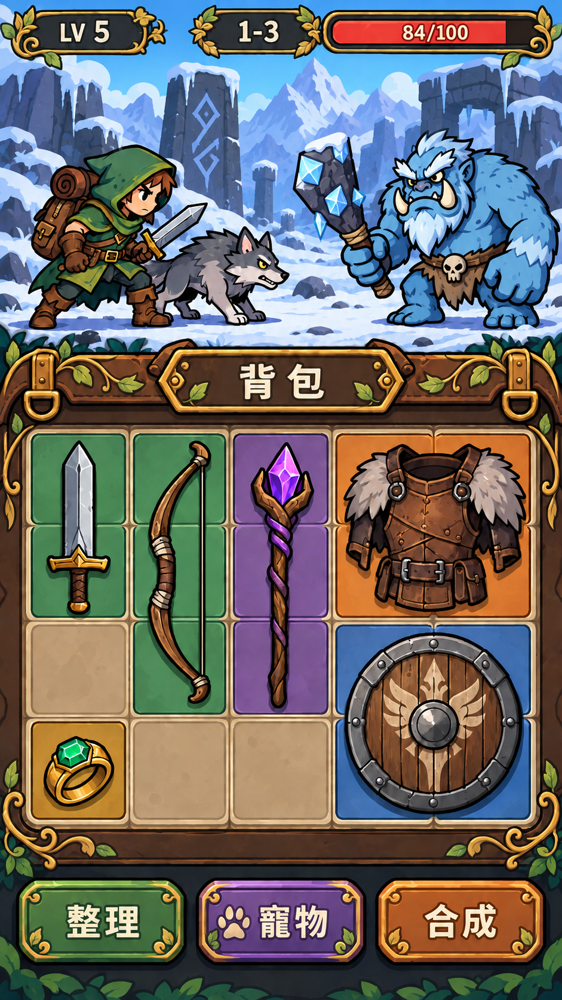
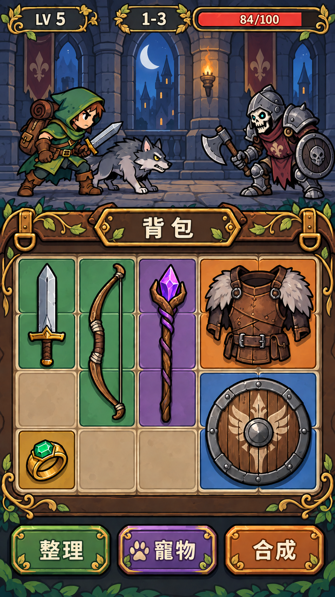

基準
森林 × 骷髏
04 卡通主體 · C 花葉介面
 查看完整畫面 / 390 px 預覽 ↗
查看完整畫面 / 390 px 預覽 ↗
第二輪 C 版，作為角色、道具、介面和花葉裝飾的一致性基準。
比較重點
比較新場景時，注意主角、狼及介面是否仍有相同的辨識度。
EVERNIGHT: PACKBOUND / ART EXPLORATION
沿用 04 的粗線卡通與 C 的花葉介面，走進礦坑、雪地與古堡。這次看整套風格換了場景和怪物後，是否仍然合你的喜好。
04 卡通主體 · C 花葉介面
查看完整畫面 / 390 px 預覽 ↗
第二輪 C 版，作為角色、道具、介面和花葉裝飾的一致性基準。
比較新場景時，注意主角、狼及介面是否仍有相同的辨識度。
暖色礦燈 · 岩壁 · 小型敵人

查看完整畫面 / 390 px 預覽 ↗以礦坑、木支架與礦車取代森林；小型哥布林測試不同輪廓是否仍然醒目。
觀察暗處的主角與狼是否清楚，以及暖色岩壁會不會搶過敵人。
冷色雪光 · 大色塊 · 大型敵人

查看完整畫面 / 390 px 預覽 ↗明亮雪地與藍色巨魔拉開冷暖對比，確認大型怪物和灰狼在淺色背景上的辨識度。
觀察巨魔是否擠壓戰場，以及灰狼能否從白雪中清楚分離。
月光火把 · 紅色旗幟 · 盔甲輪廓

查看完整畫面 / 390 px 預覽 ↗古堡走廊用月光與火把營造氣氛，盔甲亡靈測試金屬造型與花葉介面的搭配。
觀察偏暗場景的清楚程度，以及角色和場景是否仍屬於同一套卡通風格。